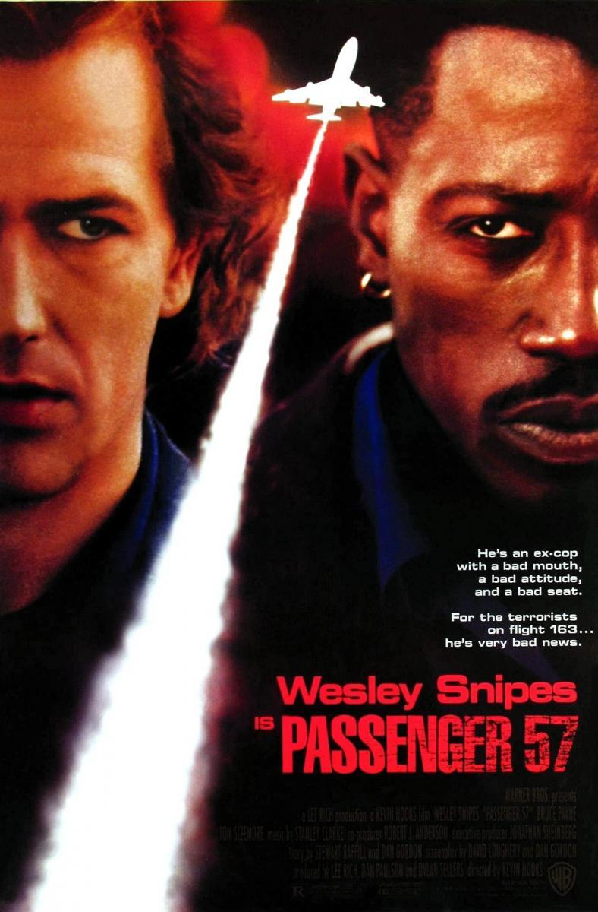
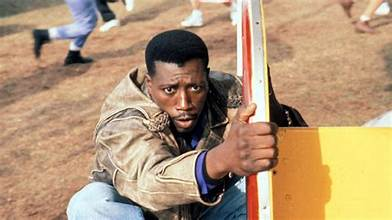
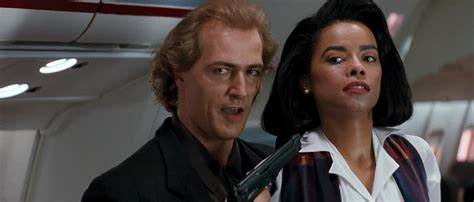

Celui-là vient de l'armoire de mon grand-père.
Une cassette enregistrée sur Canal+, sans jaquette, juste ce titre griffonné dessus. Je ne savais rien du film avant de la glisser dans le lecteur.
Et dès la première scène, j'étais scotché. Une simulation de prise d'otage dans un avion — un exercice d'entraînement qui vire au chaos — et au milieu de tout ça, Wesley Snipes. Sa présence, son sang-froid, cette manière de dominer l'écran alors qu'il ne fait "que" jouer un exercice.
Je me souviens m'être dit que ce type-là était clairement badass, bien avant de savoir qu'il deviendrait Blade quelques années plus tard.
Ce soir, retour dans l'armoire.

Passager 57 — affiche, 1992
Passager 57.
1992. Réalisé par Kevin Hooks. Avec Wesley Snipes, Bruce Payne et Tom Sizemore.
Produit par Warner Bros, sur un format resserré — 84 minutes à peine — le film s'inscrit dans la vague des "Die Hard-like" qui déferle sur Hollywood au début des années 90 : un lieu clos, un héros solitaire, un antagoniste retors.
Ici, le lieu clos, c'est un avion. Et le héros, c'est John Cutter, ancien officier de police devenu expert en sécurité aérienne, qui se retrouve malgré lui à bord d'un vol détourné par un terroriste international.
Wesley Snipes y tient son premier grand rôle de héros d'action solo — un tournant dans sa carrière, deux ans avant Demolition Man et cinq ans avant Blade.
Passager 57 ne réinvente rien du concept Die Hard.
Il l'embarque simplement à 10 000 mètres d'altitude.
1992.
Après le succès de Die Hard en 1988, Hollywood cherche à décliner la formule dans tous les décors possibles. Under Siege embarque le concept sur un porte-avions, Speed le posera bientôt dans un bus — et Passager 57 choisit l'avion, terrain encore relativement vierge pour ce type de thriller.
Kevin Hooks, réalisateur venu de la télévision, prend en main un scénario signé David Loughery et retravaillé par plusieurs mains — une production Warner Bros au budget resserré, pensée pour tourner vite et efficace plutôt que viser le spectacle démesuré.
Pour Wesley Snipes, le film arrive à un moment charnière. Il sort tout juste de New Jack City, qui l'a révélé comme acteur capable de porter un film, et tourne cette même année White Men Can't Jump. Passager 57 lui offre quelque chose de différent — le costume du héros d'action pur, sérieux, quasi impassible, loin du charisme plus bavard de ses autres rôles de l'époque.
Face à lui, Bruce Payne compose un antagoniste international élégant et cruel, tandis qu'un jeune Tom Sizemore apparaît dans un second rôle, quelques années avant de devenir un habitué du cinéma de guerre et d'action des années 90.
Le tournage mélange scènes en studio et prises de vue réelles, avec un avion de ligne reconstitué en intérieur pour permettre à l'équipe de tourner les séquences d'action dans un espace aussi exigu que crédible.
Sorti à l'été 1992, le film devient un succès commercial solide pour un budget aussi modeste.

Wesley Snipes — Passager 57, 1992
John Cutter est un ancien policier devenu consultant en sécurité aérienne, hanté par la mort de sa femme lors d'un braquage qu'il n'a pas pu empêcher.
Alors qu'il embarque sur un vol pour donner une formation de sécurité, un événement imprévu bouleverse ses plans : Charles Rane, un terroriste international recherché, se trouve escorté à bord du même avion pour être extradé.
Rane parvient à s'échapper avec l'aide de plusieurs complices déjà présents à bord, transformant un vol de routine en prise d'otages à haute altitude.
Cutter, seul à bord à posséder les compétences pour intervenir, se retrouve traqué à travers l'avion — devant déjouer les hommes de Rane tout en protégeant les passagers innocents pris au piège avec lui.
Ce qui devait être un simple trajet devient une confrontation à mort dans un espace dont personne ne peut s'échapper.
Sauf en sautant.
Passager 57 tire toute sa force d'une contrainte spatiale simple — un avion, ça ne s'arrête pas, et personne ne peut vraiment s'en échapper.
Cette contrainte structure chaque scène d'action du film. Pas de fuite possible, pas de renfort qui arrive de l'extérieur — juste un espace confiné où chaque couloir, chaque compartiment à bagages, chaque cabine devient un terrain d'affrontement resserré. Kevin Hooks exploite cette géométrie avec efficacité, transformant la banalité d'un vol commercial en un huis clos sous tension permanente.
Wesley Snipes porte le film sur une présence physique remarquable. Contrairement à d'autres héros d'action de l'époque qui misent sur les répliques ou la carrure imposante, Snipes joue sur la vitesse, la précision, une forme d'élégance dans le mouvement qui annonce déjà certains réflexes qu'on retrouvera plus tard chez Blade. John Cutter n'est jamais invincible — il est simplement plus rapide et plus déterminé que ses adversaires.
Bruce Payne, en antagoniste, évite le cliché du méchant purement brutal. Charles Rane cultive un raffinement presque théâtral, une élégance froide qui contraste avec la tension physique du reste du film — un choix qui donne au duel Cutter/Rane une dimension presque chevaleresque, malgré le cadre parfaitement trivial d'un vol commercial.
Le film assume pleinement son statut de série B efficace. Il ne cherche jamais la profondeur psychologique, mais il tient sa mécanique de bout en bout, sans temps mort.
Passager 57 est un exercice de style contraint, et c'est précisément cette contrainte qui le rend redoutablement efficace.

Charles Rane (Bruce Payne), à bord
Passager 57 souffre d'un paradoxe assez cruel — il a trop bien réussi ce qu'il faisait pour qu'on s'en souvienne comme d'un film à part entière.
Le concept "Die Hard dans un avion" a connu un tel succès commercial en 1992 qu'il a immédiatement inspiré une vague d'imitateurs et de variations sur le même principe — Sous surveillance, Turbulence, et bien d'autres déclinaisons du sous-genre "action en huis clos" qui vont se multiplier tout au long de la décennie. Passager 57, qui a pourtant contribué à populariser la formule, se retrouve noyé dans cette masse de films qui lui ressemblent.
Il y a aussi la trajectoire de Wesley Snipes lui-même. Sa carrière prend un tournant si marquant avec Blade en 1998 que tout ce qui précède se retrouve rétrospectivement éclipsé — dans la mémoire collective, Snipes "avant Blade" devient une période qu'on survole plutôt qu'on explore vraiment.
Le film souffre enfin de la comparaison directe avec Die Hard lui-même, dont il assume ouvertement l'héritage sans jamais chercher à s'en démarquer. Un hommage assumé finit parfois par être perçu comme une simple copie, même quand l'exécution est solide.
Un film qui a fait exactement ce qu'on attendait de lui.
Et qui s'est fait oublier pour cette raison même.
Parce que c'est l'un des tout premiers rôles où Wesley Snipes porte seul un film d'action américain grand public — avant que New Jack City ne le confirme comme acteur dramatique, avant que Blade ne le transforme en icône. Ici, il construit patiemment ce qui deviendra sa signature physique à l'écran.
Parce que le film exécute parfaitement son concept resserré sans jamais chercher à le complexifier artificiellement — une leçon d'efficacité narrative qui tranche avec les blockbusters actuels qui multiplient les enjeux pour gonfler leur durée.
Et parce que Bruce Payne, dans le rôle de Charles Rane, mérite d'être redécouvert pour cette élégance froide qui évite tous les clichés du méchant d'action pur et dur de l'époque.
Premier épisode du mini-fil "Panique à bord" de cette saison — celui qui pose les bases avant que le concept ne se décline ailleurs, autrement, avec d'autres tons.
Il y a ce moment, tout au début du film, où Cutter participe à cet exercice de simulation — cette prise d'otage fictive qui tourne mal à sa manière. On ne sait pas encore qui est vraiment ce personnage. Et pourtant, dès les premières minutes, on comprend déjà tout ce qu'il faut savoir sur lui.
Wesley Snipes n'avait pas encore de cape ni de sabre. Juste un costume de sécurité aérienne, et cette présence tranquille qui allait, quelques années plus tard, porter des franchises entières.
Premier vol du mini-fil "Panique à bord" de cette saison. D'autres avions suivront, avec d'autres tons, d'autres enjeux.
Celui-ci reste le plus sobre des trois.
La cassette est dans le lecteur. On rembobine.
Titre original
Passenger 57
Pays
États-Unis
Genre
Action
Durée
84 min
Producteur
Warner Bros
Avec aussi
Bruce Payne · Tom Sizemore
Fil conducteur
Panique à bord (1/3) · Wesley Snipes avant Blade (1/2)
Note
Premier grand rôle d'action solo pour Wesley Snipes
Regarder l'épisode
SOMEDAY — S2 EP. 08